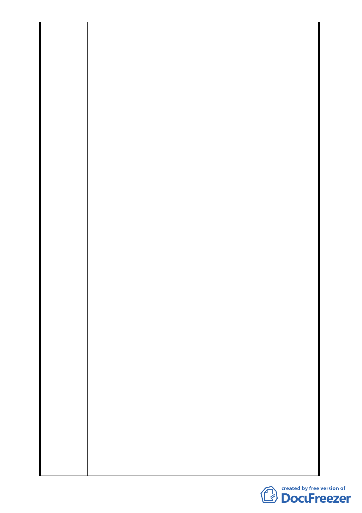

當初簽同意書所預期目的。故原提出之同意書究係為何
項同意書？亦有爭議，尚待釐清。
二、本都市計畫變更與2010更新案結合。如2010案往後不能
執行，則此劃定區是否取消？影響本社區權益甚大！且
本案非為一般都市更新案，其程序有法律上之爭議及適
法性問題。另本案原為自行申請之都市更新區，後經政
府劃定為優先都市更新區，門檻更低，爭議更大。故本
棟住戶反對納入本都市計畫區域及2010都市更新區。
三、合康公司所提全街廓包含仁愛路路邊、仁愛路24巷及杭
州南路101巷等，惟此區後半大都為4樓及6樓雙拼建築，
與合康公司所在地玩具大樓12層樓有極大差異，未來在
分配樓層及住戶坪數，顯有不易公平之處，亦非短期能
整合。依都市更新條例施行細則第5 條所規定之一致
性、公平性及土地整合之易行性等原則顯有不符。
四、本社區內101巷巷道筆直，各建築屋狀況健全，景觀尚稱
良好，與計畫書所提建物老舊、安全堪虞等，似有不符。
本巷道及週邊不因本案之興建而擴大或改善，所謂道路
交通、消防救災，鄰里活動均呈現發展停滯現象亦有不
符。另本棟建築屋況良好，結構安全無疑，無改建之急
迫性。興建規劃中之28層大樓反使各項狀況惡化。
五、本變更都市計畫案之法令依據都市計畫法第27條第1項第
4款、都市更新條例第6、8條，應依據經過住戶同意並主
動提出申請辦理為前提，目前本案都市計劃變更案係合
康公司誤導所有權人而提出，並非所有權人已有共識後
之共同意願，此時應尊重住戶的反對聲浪而明智終止。
目前撤銷同意書人數增加，故本案同意人數已明顯減少。
六、2010案需於2010年9月底前動工，若拆除重建勢必使本區
住戶流離失所，況且使用面積不增反減，住戶權益受損。
是以對本住戶而言毫無利益，更無誘因。合康公司已使
本區居民感覺欠缺誠懇及欠缺安定感，且資訊並未透
明，並非可以放心合作之對象。另該公司規劃都市更新
案似欠缺殷實及信任感。
七、民法第 765 條明定：「所有人，於法令限制範圍內，得
自由使用、收益、處分其所有物，並排除他人之干涉。」，
中華民國憲法第十五條明文規定：「人民之財產權應予
保障」，故本都市計畫變更及都市計畫變更案破壞人民
財產權、生存權，使目前的安定生活，面臨變動之風險。
如不尊重住戶的反對聲音而貿然實施，顯然侵犯人民之
權益，勢必面臨無止境之抗爭。
- 24 -